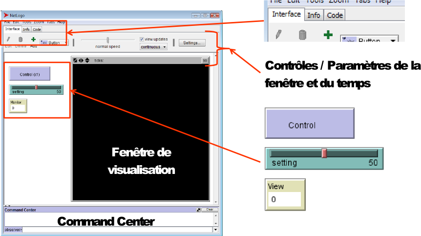

Vie artificielle
Master 1 - informatique
D. Olivier et A. Dutot
Damien.Olivier@gmail.com
Objectifs
- Apprendre à concevoir des modèles ;
- Comprendre et utiliser l'approche systémique ;
- Usage de la simulation, approche in silico
- Utiliser la métaphore naturelle ;
- Aborder le paradigme de la vie artificielle ;
- Utilisation d'un outil NetLogo

Déroulement
- Pré-requis
-
-
De la curiosité ;
-
De l'envie ;
-
De la bonne volonté ;
-
Un peu d'algorithmique.
-
- Méthode de travail
-
-
Cours intégré ;
-
Travail personnel ;
-
Projet à rendre.
-
Exemple
Plan
- Modèle
- Simulation
- NetLogo
- NetLogo, qu’est-ce que c’est ?
- Interface graphique : les 3 onglets
- Concepts de programmation
- Fonctionnalités supplémentaires
- Exemples de modèles
Modéle
Du problème au modèle
- Modélisation : concevoir une représentation d'un
objet ou d'un phénomène d'une manière
utilisable.
Tout ce qui est simple est faux, tout ce qui ne l'est pas est inutilisable -- Paul Valéry
- Différents types de modèles :
Cartes, plan ou maquettes physiques
Algorithme
Formules mathématiques
.....
Modèle
Précision de la description
- Pour un phénomène ou un objet, il existe plusieurs niveaux de description. Il faut trouver le niveau pertinent.
- Modélisation d'un avion ... comment le décrire ?
Une seule entité ponctuelle et indivisible qui se déplace : pertinent pour la gestion du trafic aérien.
Représentation des molécules constituant le gaz du réacteur : pertinent pour l'étude de la combustion et compression interne.
Plusieurs niveaux de description peuvent être simultanément nécessaires (déstabilisation d'un écosystème p.e et ses conséquences à grande échelle)
Modèle
Du problème à la simulation
- La modélisation consiste à créer une représentation simplifiée d'un problème.
- Le modèle doit permettre de simuler le comportement du problème.
- 2 étapes :
- L'analyse qui étudie problème.
- La conception qui simule le problème pour le résoudre.

Modèle
Définition
Pour un observateur B, un objet A* est un modèle de A dans la mesure où B peut utiliser A* pour répondre aux questions qui l'intéresse sur A"
Marvin Minski 1965
- Un modèle pourquoi ?
- Révéler les propriétés des systèmes étudiés ;
- Révéler les carences de connaissances ;
- Tester des hypothèses ;
- Formaliser, transmettre des connaissance.
- Grande question : peut-on imaginer une modèle de l'apparition de la vie ?
Problème : Les systèmes naturels sont complexes à cause de nombreuses interactions, pro-actions et retro-actions. Seule une modélisation prenant en compte les interactions peut faire apparaître les comportements émergents.Modèle
Les grandes classes de modèles
- 3 classes + 1
- Modèles analytiques : déterministes, systèmes d'équations linéaires, programmation linéaire et équations différentielles (macro);
- Modèles simples ;
- Modèles compartimentaux.
- Modèles stochastiques : probabilistes, analyse de Markov (macro);
- Modèles par simulation (micro)
- Simulations à composantes analytiques ;
- Simulations discrètes sans composantes analytiques ;
- Combinaison des modèles.
Simulation
Le temps et l'espace
Le temps
- Le temps envahit nos modèles ;
- La simulation c'est le modèle plongé dans le temps (D. Hill) ;
L'espace
- Nécessite la localisation des entités du modèle et l'évolution dans le temps ;
- Définir les relations spatiales et leurs évolutions.
Questions
- Problème de la flèche du temps : reversibilité au niveau micro vs. irreversibilité au niveau macro ;
- Temps discret / Temps continu ;
- Espace discret / Espace continu.
 Une introductionD'après J. Fiegel - R Doursat
Une introductionD'après J. Fiegel - R Doursat
Netlogo c'est
- Un outil de programmation original ;
- Un environnement simple...
- ... mais puissant !
- Un outil en constante évolution...
- ... et utilisé dans une large variété de contextes
- Un monde de tortues <;)
- Un manuel utilisateur complet et agréable à lire.
Netlogo c'est
Un outil de programmation original
Issu des langages Logo, spécialement conçus dans une démarche de pédagogie active, originalement à visée éducative (forte notion de jeu, de tests, d’expériences)
La voie normale de l’acquisition n’est nullement l’observation, l’explication et la démonstration, processus essentiel de l’École, mais le tâtonnement expérimental, démarche naturelle et universelle.(Freinet, 1964)Netlogo c'est
Un outil de programmation original
- Langage de programmation orientée agent :
- création et étude d’un monde, dans lequel des milliers d’entités virtuelles peuvent être placés simultanément, possédant chacune leurs propres processus.
- Moyens de visualisation variés :
- dessins, graphiques, moniteurs, fichiers CSV (Comma- separated values) et de films.
- Multiplateforme (basé sur Java / Scala).
- Création automatique d’applications web.
Netlogo c'est
Un environnement
- Facile à prendre en main :
- présence d’une longue liste de modèles modifiables, pour un apprentissage par l’exemple (thèmes variés : sciences sociales, biologie, physique, jeux...).
- quelques clics suffisent pour jouer, tester des modèles, lancer des simulations et obtenir des résultats.
- Langage de programmation simple d’accès :
- on peut facilement lire un programme ;
- compilation automatique.
- Interface graphique claire et facilement modifiable.
Netlogo c'est
Un environnement
- Puissant :
- convient bien à la modélisation de systèmes complexes évoluant dans le temps ;
- création jusqu’à des dizaines de milliers d’agents ;
- permet l’étude des liens entre le comportement individuel des agents (niveau microscopique) et les phénomènes émergents qui peuvent apparaître lorsqu’ils interagissent ensemble et avec leur environnement (niveau macroscopique).
Netlogo c'est
Un outil aux multiples applications
- Education : dessins, introduction à la programmation, modèles participatifs ...
- Simulation de systèmes simples ou complexes en sociologie, biologie, médecine, physique, chimie, mathématiques, informatique, économie, psychologie sociale...
- Cinétique des gaz, systèmes solaires, comportements humains...
- Bon outil de communication
Netlogo c'est
Un monde d'agents
- 4 types d’agents dans un monde NetLogo :
- les turtles : agents qui peuvent se déplacer.
- les patches : portion du sol (case) sur laquelle les turtles peuvent se situer et se déplacer (notion d’environnement).
- les links : permet de relier des turtles entre eux (graphes, réseaux...)
- L’observer : agent unique, se situant nulle part et partout.
Il régit, modifie et observe le monde. Sorte de big brother !Netlogo c'est
Un monde d'agents
Netlogo c'est
Un monde d'agents
Modèle Boiling utilisant uniquement des patches (automate cellulaire) Modèle de création de réseaux, utilisant des turtles (en bleu) et des links (en gris). Netlogo c'est
Un manuel utilisateur complet
- Livré avec le logiciel ;
- Très bien fait, très lisible ;
- Traite :
- des concepts de base de NetLogo ;
- des astuces de programmation ;
- de toutes les fonctionnalités du système.
- Contient un dictionnaire et de multiples tutoriels ;
- À lire et à relire !
Netlogo c'est
Une interface graphique
- Onglet 1 : Une interface graphique claire pour les modèles
- 3 types d’éléments pour 3 couleurs :
- Bleu = contrôles ;
- Vert = variables ;
- Beige = visualisation.
- Une fenêtre de visualisation aux multiples options
- Onglet 2 : Une aide intégrée.
- Onglet 3 : Une interface de programmation simple, mais plutôt efficace.
Netlogo c'est
Une interface graphique
Netlogo c'est
Une interface graphique - onglet 1
- Fenêtre de visualisation : affichage du monde créé ;
- Command Center : ligne de commandes (tests rapides).
- Type d'éléments n° 1 : les CONTROLS :
- Couleur : bleu ;
- Fonction : exécution de commandes ;
- Apparence : buttons (+ command center) ;
- Détail : une seule exécution ou exécution continue.

Netlogo c'est
Une interface graphique - onglet 1
- Type d’éléments n°2 : les SETTINGS
- Couleur : vert ;
- Fonction : paramétrage du modèle ;
- Apparence : sliders, switches, inputs, choosers ;
- Détail : valeurs disponibles peuvent aussi être paramétrées.
Netlogo c'est
Une interface graphique - onglet 1
- Type d’éléments n°3 : les VIEWERS
- Couleur : beige ;
- Fonction : affichage d’informations, permettent de surveiller l’état courant du monde ;
- Apparence : monitors, plots, outputs ;
- Détail : Exportation de graphiques possible.

Netlogo c'est
Une interface graphique - onglet 1
Netlogo c'est
Une interface graphique - onglet 1
Clic droit la fenêtre de visualisation + inspect ‹agent› = agent monitor Netlogo c'est
Une interface graphique - onglet 1
- 3 couches de dessin :
- peuvent s’importer, s’exporter (sauf celle du milieu) ;
- peuvent être copiées (image ou vidéo).
Netlogo c'est
Aide intégrée - onglet 2
Utilisation d’un langage markup : Markdown, assez complet pour insérer des titres, images, listes, formules, notes, citations ...
Netlogo c'est
interface de programmation - onglet 3
Programmation NetLogo
Concepts
- À chaque type d’agents, ses fonctionnalités ;
- Types et primitives « basiques » ;
- Longue liste de primitives pour gérer les agents ;
- Création de groupes d’agents ;
- Création de nouveaux types de turtles ou de links ;
- Exécution : synchronisation ou « parallèle » ;
- Un programme = suite de reporters et de commandes.
Programmation NetLogo
Types d'agents - les patches
patch(1 patch),patches(plusieurs) :
- Coordonnées entières uniques / centre :
pxcor pycor;- Couleur
pcolor;- Étiquette
plabel;- Ne bouge pas ! Présence obligatoire ;
- Utilisations principales : automates cellulaires, dessin, sol et stockage d’informations environnementales pour les turtles.
Programmation NetLogo
Types d'agents - les turtles
turtle(1 turtle),turtles(plusieurs) :
- Identifiant :
who;- Coordonnées :
xcor ycor, nombre réel, elle ne sont pas forcément au centre du patch ;- Couleur :
color;- Orientation :
heading0 à 360°, 0 = Nord, rotation horaire ;- Forme :
shape;- Type (espèce) :
breed;- Taille :
size;- Étiquette :
label;- Caché ou non :
hidden?;- Trace activée ou non :
pen-mode;- Utilisations principales : entités des modèles.
Programmation NetLogo
Types d'agents - les links
link(1 turtle),links(plusieurs) :
- Relié à deux turtles :
end1 end2(lien unique) ;- Couleur :
color;- Épaisseur :
thickness;- Forme :
shape;- Type (espèce) :
breed;- Étiquette :
label;- Caché ou non :
hidden?;- Type de lien :
tie-mode;- Utilisations principales : arêtes de graphes, de réseaux, connexion visuelle entre agents .....
Programmation NetLogo
Types d'agents - l'observer
- Peut créer des nouvelles turtles ;
- Peut accéder à tous les agents (patches, turtles, links) et lire et modifier leurs états.
Programmation NetLogo
Variables
- Associer une valeur simple ou structurée à identificateur (nom)
- Type des variables : nature des valeurs que peut prendre une variable :
- Boolean :
true,false;- Number :
0,0.01,pi,blue.... ;- String :
"aabbccdd";- Liste :
(list),[ ],(list 0 1),[0 1],(list 1 (list 2 "truc")).- Déclaration et modification de variables :
- Globales (observer) :
globals [‹nom›];- Globales (pour un type d’agents) :
turtles-own [‹nom›];- Locales :
let ‹nom› ‹valeur›(dans une procédure) ;- Modification :
set ‹nom› ‹valeur›(dans une procédure) ;Programmation NetLogo
Instructions
- Boucles :
while [‹bool›][ ],foreach ‹liste› [ ],repeat ‹number› [ ],loop [ ‹...› stop ];- Mathématiques :
sin, cos, random, sum, variance... ;- Tests logiques :
and, xor, is-number?, is-turtle?... ;- Listes :
length, first, sort, sort-by [‹test›]...Programmation NetLogo
Instructions - structures de contrôle
if ‹reporter›[‹commande›]
- Le
‹reporter›rapporte différentes valeurs (true ou false)à partir de différents agents ainsi certains agents executeront les commandes d’autres pas !ifelse ‹reporter›[‹commande1›][‹commande2›]ask patches [ ifelse pxcor > 0 [ set pcolor blue ] [ set pcolor red ] ]ifelse-value ‹reporter›[‹commande1›][‹commande2›]Programmation NetLogo
Gestion des agents
- Observer :
- Création :
create-turtles, resize-world... ;- Demande à au moins 1 turtle/patch/link de réaliser des choses
ask turtle 10 [<...>], ask patches [<...>]- Patches :
distance, neighbors, diffuse, turtles-here... ;- Turtles :
forward (fd), towards, create-link-with, die... ;- Links :
tie, link-neighbors, link-length... ;- Chaque agent peut demander à son tour :
ask x [ ask y [<...>] ] ;;Chaque x demande à chaque y de...Programmation NetLogo
Groupe d'agents
- Sélection de groupes d’agents du même type :
with:ask patches with [ pcolor = red ] [<...>]‹agent›-set:(patch-set patch 0 0 patch 10 9)- Groupe d'agents = agentset
- Liste vide
(no-patches);- Contenir un seul agent
((turtle-set one-of turtles))- Sélection enregistrable dans une variable :
let tortues-bleues turtles with [ color = blue ] ask one-of tortue-bleue [ print "Adieu monde cruel" die ]Programmation NetLogo
Groupe d'agents
ask: donner des ordres à tous les agents dans un agentset ;any?: pour savoir si un agentset est vide ;all?: pour savoir si chaque élément d'un agentset vérifie une condition ;count: retourne le cardinal d'un agentset ;one-of: choisir un agent au hazard dans un agentset ;ask one-of turtles [set color green]max-one-ofoumin-one-of: trouver l'agent le meilleur ou le pire suivant un critère :ask max-one-of turtles [sum assets] [ die ]Programmation NetLogo
Groupe d'agents
other turtles ;; Toutes les autres tortues other turtles-here ;; Toutes les tortues sur le patch turtles with [color = red] ;; Toutes les tortues rouges turtles-here with [color = red] ;; Toutes les tortues rouges sur le patch patches with [pxcor > 0] ;; Patches sur le coté droit turtles in-radius 3 ;; Toutes les tortues à moins de 3 patches patches at-points [[1 0] [0 1] [-1 0] [0 -1]] ;; Les patches E N O S neighbors4 ;; Racourci pour désigner la même chose turtles with [(xcor > 0) and (ycor > 0) and (pcolor = green)] ;; Tortues dans le premier quadrant qui sont sur un patch vert turtles-on neighbors4 ;; Tortues sur le 4 patches cardinaux voisins [my-links] of turtle 0 ;; Tous les links connecté à la tortue 0Programmation NetLogo
Quand les tortues deviennent des loups
- Turtles et links peuvent être spécialisés (1 niveau)
- Déclaration :
breed [ loups loup ]
undirected-link-breed [ liens lien ]- Les nouveaux types d’agents font toujours partie de leur super-groupe, mais peuvent recevoir leurs propres variables :
‹agentset›-own [‹...›].- Exemple :
breed [ portes porte ] portes-own [ ouverte? ] create-portes 1 [ set ouverte? true setxy -5 10 ] ;; porte 1, ouverte en -5 10Programmation NetLogo
Séquentiel et paralléle
La tortue se déplace de 2 pas et devient rouge.
ask turtles [ fd 3 set color red]Toutes les tortues se déplacent à leur tour d'un pas, puis d'un autre et ensuite deviennent rouge. Cette instruction est en cours d'abandon. Comment l'écrire ?ask-concurrent turtles [ fd 3 set color red ]Toute les tortues se déplacent de 2 pas puis deviennent rouge.
ask turtles [ fd 2 ] ask turtles [ set color red]Programmation NetLogo
Commandes
- Une commande définit les actions à exécuter par les agents
- prédéfinie : primitive NetLogo ;
- à définir par le programmeur : procédure.
- Une procédure est définie par :
to ‹unNom› ‹liste de commandes› endto-report ‹unNom› ;; retourne un résultat ‹liste de commandes› endto ‹unNom› [liste1 liste2] ;; paramètres en entrée ‹liste de commandes› endProgrammation NetLogo
Primitives
- Exemples :
ca(clear all) ;crt(create turtles) ;lt(left turn),rt(right turn),fd(forward) ;set(affectation de variable) ;ask, ...- Elles peuvent avoir des valeurs en entrée :
crt 100;rt 17;Programmation NetLogo
Utiliser le command center
- Choisir «
New» dans le fichier menu ;- Créer des turtles :
observer> crt 100- Les turtles créées sont regroupées au centre, pour les voir il faut augmenter le rayon du cercle :
- Passer de
observer>àturtle>(cliquer dessus)turtles> fd 10- ou
turtles> turtles> fd (random 10)Programmation NetLogo
Écrire une procédure
- Créer un bouton
setup
- Cliquer sur l’icône bouton dans la barre d’outil ;
- Puis cliquer dans un endroit de la fenêtre graphique où vous voulez placer votre bouton ;
- Une fenêtre de dialogue s’ouvrira, écrire « setup » dans display name, et cliquer sur le bouton « ok » ;
- Le bouton s’affichera sur l’interface graphique.
Programmation NetLogo
Écrire une procédure
- Choisir l'onglet « code » ;
- Saisir le code suivant :
to setup ;; Le nom de la procédure ca ;; On fait le ménage crt 100 ;; On crée 100 turtles ask patches [ if (pxcor > 0) [set pcolor blue] ;; Demander aux patches à droite de devenir bleu ] ask turtles [ ;; Demander aux turtles de se déplacer de 10 patches fd 10 ] end- Revenir au niveau de l'onglet « interface » ;
- Cliquer avec le bouton droit sur « setup » ;
- Choisir « edit », puis dans « command » mettre
setup.Programmation NetLogo
Un autre exemple
- Choisir l'onglet « Code » ;
- Remplacer le code par :
to setup ca crt 100 ask turtles [ setxy (random 100) (random 100) set shape "fish" ] end- Commenter le code (expliquer ce qu'il fait), vous devez vous aider de la documentation ;
- Ajouter un slider de façon à fixer la population initiale ;
- Modifier votre code de façon à ce que des poissons au hasard deviennent des croix :
- Ajouter pour cela une procédure qui réalise cela ;
- Associer un bouton permettant d'appeler cette procédure ;
- Créer un bouton et ce qui est nécessaire pour faire nager les poissons et pas les croix ;
- Modifier votre procédure pour que les poissons n'entre pas en collision
- Indications : utiliser un agentset constitué des tortues dans le patch devant et verifier qu'il est vide
patch-ahead, any?, turtles-on